Routing States
Bad Routing Strategies
So far, we’ve defined the routing problem as this: When a router receives a packet, how does the router know where to forward the packet such that it will eventually arrive at the final destination?
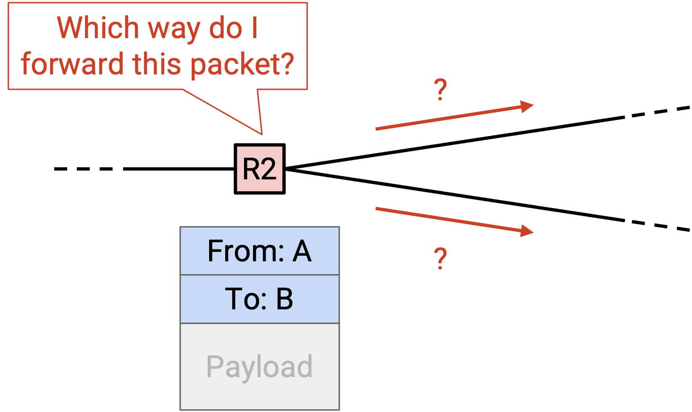
Once we find an algorithm (a routing protocol) to solve this problem, we can apply that algorithm to generate an answer, which we’ll call a routing state. You can think of a routing state as a set of rules that each router uses to forward packets it receives. What does a routing state look like, and how can we check if a given routing state is valid or good?
To start, we could consider some bad strategies for generating routing states. One possible routing strategy is: The router forwards the packet to a randomly-selected neighbor. Intuitively, we can already see that routing states generated this way probably won’t be valid. If we use this strategy, we can’t be sure that packets will reach their final destination.
Another possible bad strategy is: The router forwards a copy of the packet to every single one of its neighbors. Intuitively, this might be valid, in the sense that copies of the packet will eventually spread across the entire network and probably reach the destination. However, this strategy is inefficient, because it wastes a lot of bandwidth forwarding the packet to routers that were not needed to send the packet to its final destination.
We can intuitively see that these two strategies are bad, but to analyze smarter routing protocols, we’ll need to formally define what a routing state looks like. Then, we’ll need to formalize what makes a routing state valid, and what makes a routing state good.
Forwarding Tables
In our model of the network, each router has some number of outgoing links connecting it to adjacent routers and hosts. In other words, in the underlying graph, each router node has some number of neighbors, connected to the router by an edge.
When the router receives a packet, with its final destination in the metadata, the router needs to decide which of the adjacent routers or hosts the packet should be forwarded to. The next intermediate router that the packet will be forwarded to is called the next hop.
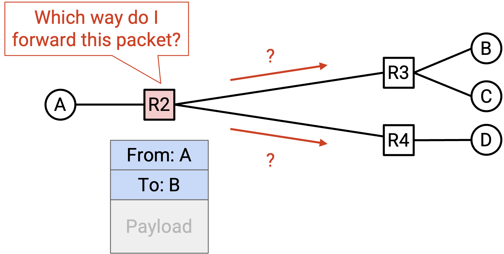
For example, consider this network. If R2 receives a packet whose final destination is B, the natural corresponding next hop would be R3. The possible choices of next hop are R1, R3, and R4 (the three routers adjacent to R2), and R3 is the next hop that sends the packet closer to B.
If R2 instead receives a packet whose final destination is A, then the natural corresponding next hop would be R1 instead.
For each possible final destination, we can write down the corresponding next hop to forward the packet closer to that destination. The result is called a forwarding table.
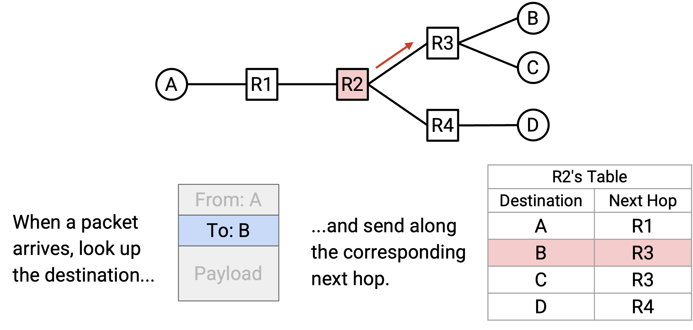
Note that the in the mapping of destination to next hop, a next hop can be used more than once. For example, in R2’s forwarding table, packets destined for B and packets destined for C will both be forwarded to R3.
By writing down the forwarding table for each intermediate router, we now have a full routing state for the network. In other words, given a packet with some final destination, we know exactly how each router will forward that packet.
In the physical world, instead of mapping destinations to next hops, routers will often map destinations to physical ports, where each physical port corresponds to a link. In the graph model, we would now be mapping each destination to an edge, instead of mapping each destination to a neighboring node. In the physical world, you can think of this as a router having several outgoing wires, where each wire is connected to another router. Instead of writing down neighboring routers in the forwarding table, the router instead writes down which wire a packet should be sent along.
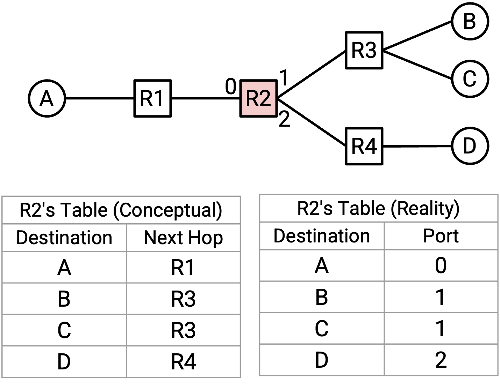
This is a subtle distinction, and it reflects the fact that the router doesn’t really care about the identity of the neighboring router. The only decision the router needs to make is to send the packet along one of the wires, regardless of who the wire is connected to. In these notes, we’ll draw forwarding tables as mapping destinations to next hops (instead of physical ports), for simplicity.
Destination-Based Forwarding
A consequence of using a forwarding table is that given a packet, the decision of where to forward the packet depends only on the destination field of the packet. In other words, if a router receives many different packets, all with the same destination, they will all be routed to the same next hop (assuming the forwarding table stays unchanged). Since each destination is only mapped to a single next hop, there’s no way for two packets with the same destination to be forwarded to different routers. This approach is called destination-based forwarding or destination-based routing.
Destination-based routing is the most common approach to routing, and it’s what’s used in the modern Internet. In theory, other approaches could exist where additional metadata is used to make forwarding decision, but these are usually only used in limited applications (e.g. inside a particular local network).
In later units, when we consider data center topologies, we might consider destination-based forwarding approaches where there might be more than one next hop for a specific destination. In this unit, we’ll assume that each destination is mapped to only one next hop.
Routing vs. Forwarding
Now that we’ve introduced the idea of a forwarding table, we need to make a distinction between the process of creating the forwarding table, and the process of using the forwarding table.
Routing is the process of routers communicating with each other to determine how to populate their forwarding tables.
Forwarding is the process of receiving a packet, looking up its appropriate next hop in the table, and sending the packet to the appropriate neighbor.
Forwarding is not the same as routing. When forwarding packets, routers use the existing forwarding table, with no knowledge of how that table was generated.
Forwarding is a local process. When a router is forwarding packets, the router doesn’t need to know the full network topology. The router also doesn’t care about where the packet goes after it’s been forwarded to the next hop. The router only needs to know about the arriving packet, and its own forwarding table.
By contrast, routing is a global process. In order to fill out the forwarding tables, we will need to learn something about the global topology of the network.
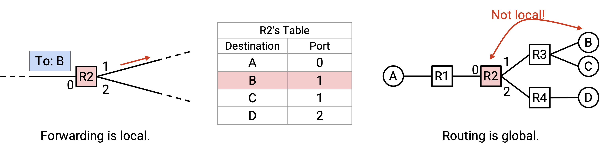
For example, in when filling in R2’s forwarding table, we had to somehow learn that destination B is associated with R3, even though host B is not directly connected to R2. During routing, each router will need to know about non-local destinations as well.
Routing State Validity is Global
Recall that a routing state consists of a forwarding table for each router, which collectively tells us how packets will travel through the network. Given a routing state, how can we tell if the routing state is correct or incorrect?
First, we need to formally define routing state validity to determine whether a routing state is valid (though this term may not be widely used outside CS 168 at UC Berkeley). The main requirement for validity is: the routing state needs to produce forwarding decisions that ensure that packets actually reach their destination.
Note that validity must be evaluated in the global context, not a local context. Looking at local routing state, such as a single router’s forwarding table, cannot tell us whether a routing state is valid. For example, in a router R2’s local forwarding table, we might see that the next hop for destination A is router R3, but we have no way to decide if this is valid. Will forwarding packets to R3 help packets reach destination A? There’s no way to tell from just the forwarding table.
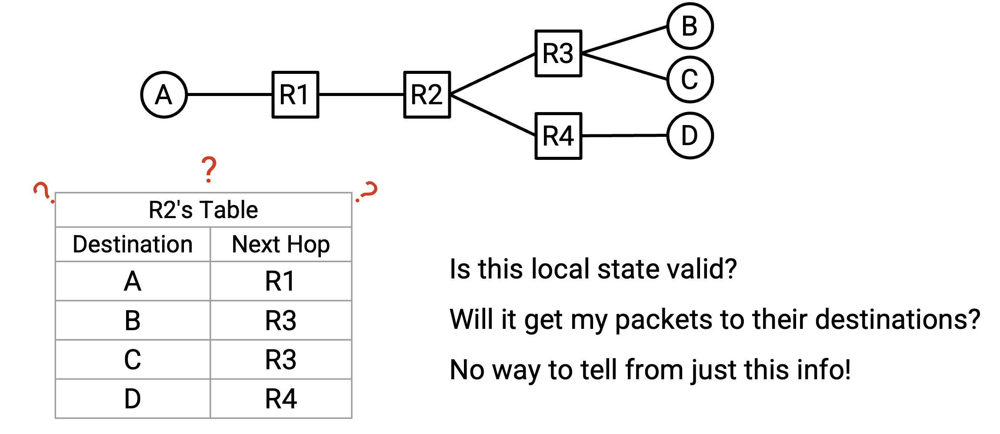
Instead, we need to consider the global routing state, which consists of the collection of all the forwarding tables in all of the routers.
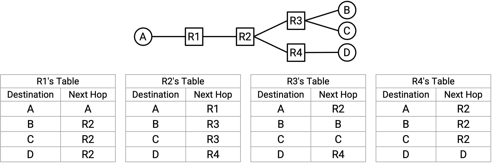
Routing State Validity Definition
Now, we can define a formal condition that we can use to check whether or not packets will reach their destination for a given routing state.
A global routing state is valid if and only if, for any destination, packets do not get stuck in dead ends or loops.
A dead end occurs if a packet arrives at a router, but the router doesn’t know how to forward the packet to its destination, so the packet is not forwarded. This might occur if the router’s forwarding table doesn’t contain an entry for the packet’s destination.
Note that the dead end condition only applies to the intermediate routers, and not the end hosts. When a packet reaches the destination end host, there’s no need for the end host to forward the packet any further, so we won’t consider end hosts in the dead end condition.
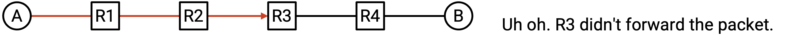
A loop occurs if a packet is sent in a cycle around the same of nodes. Note that because we’re using destination-based forwarding, where the next hop only depends on the destination, once a packet enters a loop, it will be trapped in the loop forever. When the packet arrives at the router the first time, or the 10th time, or the 500th time, it will be forwarded the exact same way (since the final destination is the same). Since this applies to every router on the loop, the packet will be stuck in the loop forever.
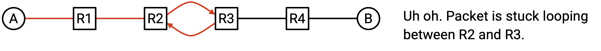
This condition (no dead ends, no loops) is both necessary and sufficient for a route to be valid. Let’s check both directions of this logical implication.
No dead ends and no loops is a necessary condition for validity. In other words, a state is valid only if there are no dead ends and no loops.
Proof: If there’s a dead end, the packet won’t reach the destination. The packet will reach the dead end and not be forwarded.
If there are loops, the packet won’t reach the destination. The packet will be trapped in the loop forever (because of destination-based forwarding, described earlier). Also, note that the final destination can’t be part of the loop, since the destination won’t forward the packet. Therefore, a packet trapped in the loop won’t reach the destination.
Now, let’s check the other direction. If there are no loops and no dead ends, then the state is valid.
Proof: Assume that the routing state has no loops or dead ends. A packet won’t reach the same node twice (because there are no loops). Also, the packet won’t stop before reaching the destination (because there are no dead ends). Therefore, the packet must keep wandering through the network, reaching different nodes. There are only a finite number of unique nodes to visit, so the packet must eventually reach the destination. Therefore, the routing state must be valid.
Directed Delivery Trees
Now that we have a formal definition for routing state validity, we can ask: given a global routing state, how can we check if it’s valid?
To simplify the problem, let’s start by considering only a single destination end host, ignoring all other end hosts. In each router, we can look up this destination to get the corresponding next hop, which tells us how each router will forward packets meant for this destination.
We can represent the next hop at each router (for this single destination) as an arrow, which shows us all the possible paths that this packet might take to reach the single destination.
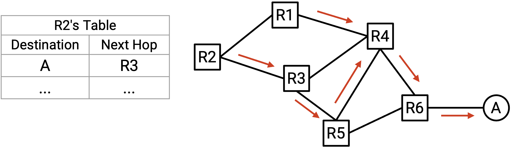
In the resulting graph, each node will only have one outgoing arrow. This reflects our assumption that in each router’s forwarding table, there is only one next hop corresponding to a destination.
Notice that in the resulting graph, once two paths meet, they never split. In other words, even if there are multiple incoming arrows (paths) to a node, since there is only one outgoing arrow, those paths will now converge into a single path. This reflects our destination-based forwarding approach, because each router only uses the final destination to decide how to forward a packet. The router does not care how the packet arrived at the router in the first place.
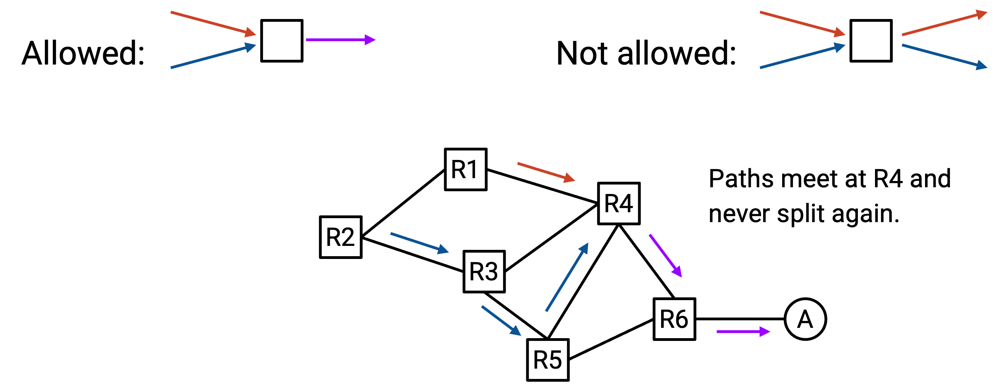
The arrows we’ve drawn form a set of paths that a packet can take to reach the single destination. This set of paths is called a directed delivery tree.
In graph terms, the arrows in a valid delivery tree must form an oriented spanning tree, rooted at the destination. Recall that a spanning tree is a set of edges in the graph that touch every node and form a tree. We want the delivery tree to be a tree, since there should be no cycles (packets can’t travel in loops). We want the delivery tree to be spanning (touch every node), because we want to be able to reach the destination from everywhere. The delivery tree is oriented because the edges have arrows, which tells us which direction to forward the packet.
All edges in a valid delivery tree should point toward the destination. In other words, starting from any node, following the arrows should always result in reaching the destination.
Verifying Routing State Validity
As before, let’s consider only a single destination end host, ignoring all other end hosts.
Example: Even though there are multiple end hosts here, let’s only consider end host A.
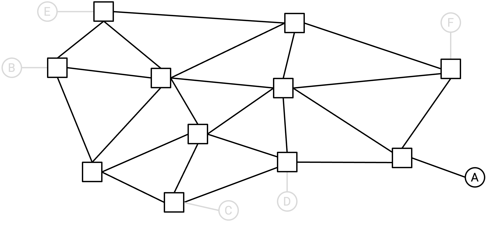
Using the forwarding tables at each router, we will draw the arrows into the network to form the directed delivery tree for this single destination. Formally, for each router (node in the graph), we will draw a single outgoing arrow from that node.
Example: Using the forwarding tables (not shown), we can draw one outgoing arrow per router.
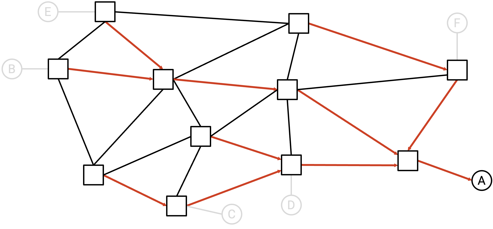
For simplicity, at this point we can delete all the links without arrows on them. These links without arrows will never be used to send packets to the single destination, since they are not on the delivery tree.
Example: We can delete all the links without arrows.
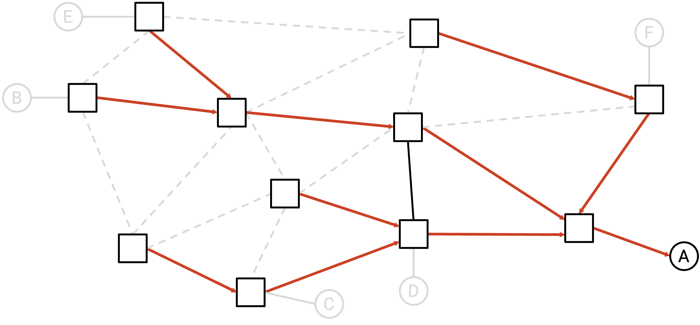
If the remaining graph is a valid directed delivery tree (spanning tree, all arrows pointing toward destination), then we can say that the routing state is valid for this single destination.
In the above example, the residual graph is indeed a valid spanning tree converging at A, so we can say this routing state is valid for A.
Here are some examples of invalid routing states:
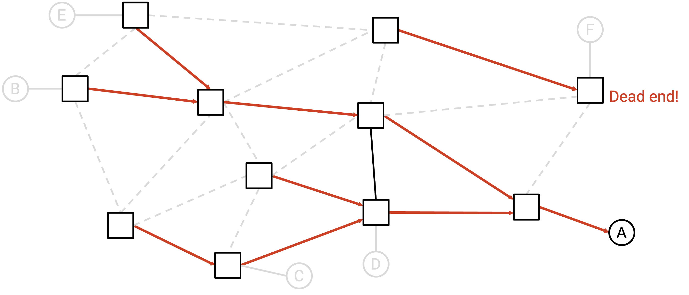
This state is invalid. Intuitively, there is a dead end router. A packet bound for A could get sent to this router, and this router would discard the packet without forwarding it. Formally, the remaining graph is not a spanning tree, because the edges are not all connected (there are two disconnected components, which is not allowed in a tree).
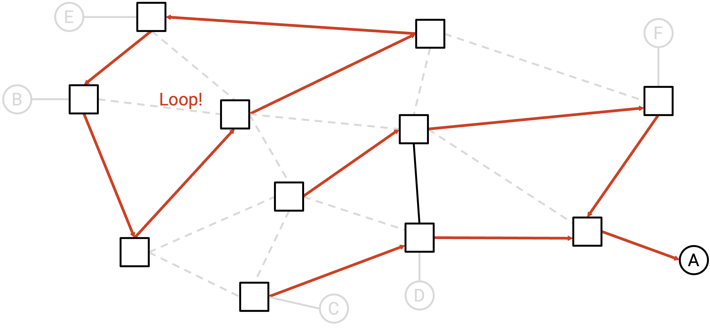
This state is also invalid. Intuitively, there is a loop that the packet could get stuck in. Formally, the remaining graph is not a spanning tree, because the edges are disconnected, and there is a cycle.
We can repeat this process, once for every different end host (isolating a different end host each time). If the routing state is valid for all destinations, then we can say that the routing state is valid, and will always deliver packets to their correct destinations.
Least-Cost Routing
Now that we have a definition of what makes a routing state valid (routes have no loops and dead ends), we can additionally define what makes a routing state good. It’s possible that a network has multiple valid routing states, and we want some metric that can help us determine whether one route is better than another.
Least-cost routing is a common approach for measuring whether a route is good. In least-cost routing, we assign a numeric cost to every link, and look for routes that minimize the cost. In other words, we want routes that result in packets traveling along the lowest-cost paths to their destinations.
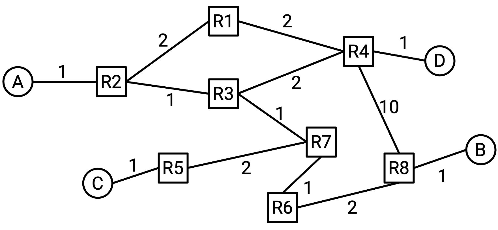
There are many different costs we could consider assigning to links. The cost could depend on the price of building the link, the propagation delay, the physical distance of the link, the unreliability, the bandwidth, among other factors. For example, we could assign costs based on the quality of the link (bandwidth and propagation delay), such that the lowest-cost path prefers higher-quality links.
By allowing operators to set link costs arbitrarily, we give the operator the ability to optimize the network for their specific needs. The costs we assign depend on the operator’s goals for the network. If we had a 400 Gbps link with 20 ms propagation delay, and a 10 Gbps link with 5 ms propagation delay, which one is lower-cost? It depends on if we’re optimizing for bandwidth, propagation delay, some combination, or something else entirely.
If we assign a cost of 1 to every link, then the least-cost path is the path that travels along the fewest links. We sometimes call this minimizing the hop count. In these notes, if the edges of a graph are not labeled with a cost, you can assume all the edges have cost 1,
The operator of a network can decide how to assign costs to each link. The operator might manually assign costs. Or, the operator could have the network automatically configure the costs, although this may not work with some metrics that can’t be automatically measured (e.g. the network has no idea about the financial cost to build the link).
When designing a routing protocol, we can abstract away how the costs were assigned. From the routing protocol’s perspective, somebody else (e.g. the network operator) has already assigned the costs, based on something that they consider important. The algorithm takes in the costs as an input, and computes the least-cost paths, regardless of what the costs actually represent.
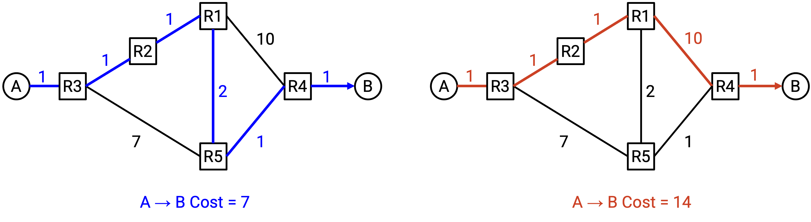
Note that costs are local to each router. A router knows about the cost of its own outgoing links, but there is no way for the router to automatically know the costs of all links. This is consistent with the constraint we mentioned earlier, where routers don’t have a global view of the entire network’s topology.
For simplicity, routing protocols make some assumptions about how the costs are defined.
We’ll assume that costs are always positive integers. This is consistent with many common real-life metrics, such as length of a link or monetary cost of a link. If we’re trying to minimize the total physical distance traveled by a packet, a negative link cost doesn’t make sense. You can’t travel along a link and decrease the total distance traveled. This assumption will help simplify our protocols later, since we won’t have to worry about edge cases like negative-weight loops (where the least-cost solution would be to travel around the loop forever).
We’ll assume that costs are symmetrical. The cost from A to B is the same as the cost from B to A. This reflects the diagrams we’ll draw, where an edge is labeled with a single symmetric cost. In theory, it’s possible to have asymmetric link costs, but this is not done in practice, and would lead to more complicated routing protocols.
With these assumptions, our definition of good routes (least-cost) is consistent with our definition of valid routes. In particular, a least-cost route won’t have any loops, because costs are positive (traversing the loop would only increase the cost).
Static Routing
One possible way to generate routes is to have the network operator manually populate the forwarding table. This is known as static routing.
Static routing by itself isn’t practical (e.g. not scalable, prone to human error), but even with a routing protocol implemented, some routes still need to be manually created by operators. You can think of these manual routes as the “trivial” or “base case” routes, from which the routing protocol generates more complex routes.
If we’re directly connected to another machine that we want to route packets to, we can manually configure a route to forward packets to that other machine. These routes are called direct routes or connected routes. For example, your home router is connected to your personal computer with a link, so your home router can add an entry in the forwarding table corresponding to your computer. This entry is added by telling the router about the connection, and is not added from running any routing protocol.
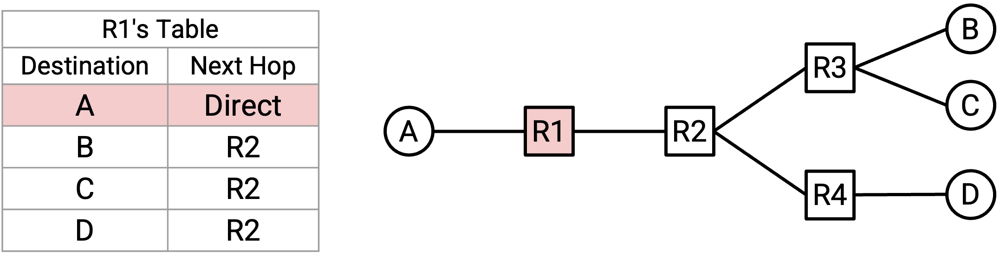
It is also possible to use static routing to hard-code entries for destinations in the forwarding table, even if we aren’t directly connected to that destination. This can be useful if there’s a route that never changes, and we want that route to always stay in our forwarding table, regardless of what the routing protocol is doing.